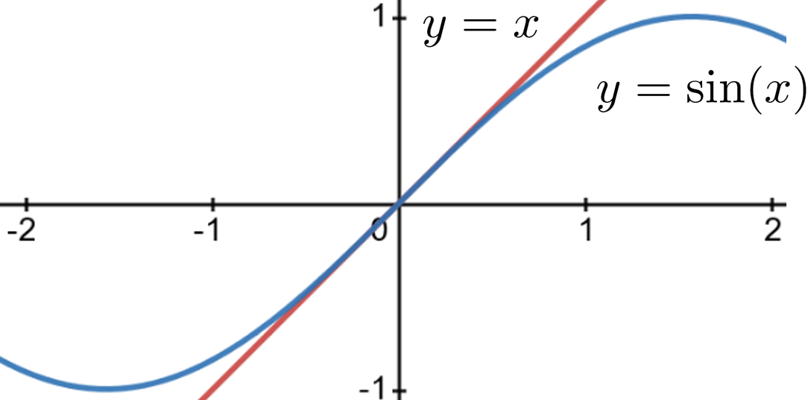

Although this may seem a paradox, all exact science is dominated by the idea of approximation. When a man tells you that he knows the exact truth about anything, you are safe in inferring that he is an inexact man. Every careful measurement in science is always given with the probable error . . . every observer admits that he is likely wrong, and knows about how much wrong he is likely to be.
I think that it is a relatively good approximation to truthwhich is much too complicated to allow anything but approximationsthat mathematical ideas originate in empirics.
In a world where you can take your phone out of your pocket, ask it for the square root of two (\(\approx 1.414213562\)) or the fifth root of seven (\(\approx 1.475773162\)), and instantly obtain those numbers, accurate to nine decimal places it is difficult to convey the profound importance of having good methods of approximation. With this level of accuracy available to us there appears to be no need for approximations.
But stop and think about this for a moment. Both \(\sqrt{2}\) and \(\sqrt[5]{7}\) are irrational numbers so neither can be completely represented by a terminating decimal. That is, the decimal form of both numbers is infinitely long. So if all we have is a value accurate to only nine decimal places what we really have is an approximation, right? Its not even a particularly good approximation in the sense that most of the information we need to completely specify \(\sqrt{2}\) or \(\sqrt[5]{7}\) in decimal form is missing.
The fact is that the modern world could not exist without good approximation methods because very little of the information necessary to functioning in the modern world can be computed precisely. Moreover in those cases where it can be computed precisely the exact number is often less useful than the approximation. For example, if you are driving to Cincinnati your GPS will tell you that you are \(2\) hours and \(25\) minutes away, not \(145.22434554656546456\) minutes away, even if the latter number is exactly correct.
Based on the very noisy audio signal it receives your phone constantly approximates what signal to send to the speaker for you to hear. Because signal processing is such a ubiquitous problem, many very sophisticated approximation techniques have been developed and they are used all of the time. We dont see them because they are usually embedded in software on our many electronic devices. Because they are so accurate, we tend not to see them as approximations.
Yet, every scientific, engineering, or financial computation involves approximations because it is almost always impossible to get perfect information. We must approximate and we do it all of the time. Well, actually most of the time our technology does it for us. But our technology is simply the realization of ideas that begin with paper, pencil, and thought. Without these no new technology is possible.
After the invention of Calculus and especially in the twentieth century the number of very good approximation techniques ballooned. We will look, very briefly, at two pre-Calculus methods of approximation. Then we will consider two early approximation methods that came from Calculus: Newtons Method and Eulers Method.
Section7.1Root Finding: Two Pre-Calculus Approaches
Subsection7.1.1The Bisection Method
The Bisection Method is what nearly everyone would think of first when faced with an approximation problem. It sounds very complicated when written out in words and symbols, as were about to do, but it is really quite simple. It will help if you do the computations along with us, rather than just reading them.
Example7.1.
For the sake of having a definite problem to work with suppose we want to compute a decimal approximation to \(\sqrt{2}\text{.}\) The Bisection Method works like this: First pick two numbers, one less than \(\sqrt{2}\text{,}\) and one greater than \(\sqrt{2}\text{,}\) In this example well choose \(1\) and \(2\text{.}\)
Next, we take the midpoint of the interval \([1,2]\) as our first approximation to \(\sqrt{2}\text{.}\) Well call this \(r_1\text{.}\) The midpoint is the average of the endpoints so in this example \(r_1 =
\frac{1+2}{2}=\frac{3}{2}\text{.}\) Since \(\sqrt{2}\) and \(\frac32\) are both in the bracketing interval \([1,2]\) we see that the distance between \(\sqrt{2}\) and \(\frac32\) is less than \(1\text{,}\) the length of the interval.
Now \(\sqrt{2}\) must either be in the interval \([1,3/2]\) or \([3/2,2]\text{.}\) We need to decide which one. Since \(2\lt\frac94=\left(\frac32\right)^2\) we see that \(\sqrt{2}\lt\frac32\) so that \(\sqrt{2}\) must be in the interval \([1,3/2]\text{.}\)
We take our next approximation to be the midpoint of the (smaller) interval \([1,3/2]\text{.}\) Thus, \(r_2=\frac{1+\frac32}{2}= \frac54=1.25\text{.}\) Since \(\left(\frac54\right)^2\le2\) (confirm this) we have \(\sqrt{2}\) bracketed by
This is really the whole idea. If we are approximating a number, \(\alpha\text{,}\) we begin by bracketing \(\alpha\) between two known numbers, say \(a\) and \(b\text{.}\) We take the average of these, \(r_1=\frac{a+b}{2}\text{,}\) as our first approximation of \(\alpha\text{.}\) We know that \(r_1\) is within \(\abs{b-a}\) (the length of the interval \([a,b]\)) of \(\alpha\text{.}\) If this is sufficiently accurate we use \(r_1\) as our approximation.
If not we determine if \(\alpha\) is in the first half-interval, \(\left[a, \frac{a+b}{2}\right]\) or the second, \(\left[\frac{a+b}{2},b\right]\text{,}\) and repeat the process, finding a new approximation \(r_2\) in an interval half the length of the first..
The Bisection Method generates a sequence of approximations, \(r_1, r_2, r_3, \ldots\) of the root we seek. In our example we have \(r_1=\frac32, r_2=\frac54\) and so on. At each step the new approximation is the midpoint of an interval whose length is one-half of the length of the previous interval. So our approximations can be made as close to the target as we would like.
Problem7.2.
(a)
Show that the next two iterations for this example are \(r_3=\frac{11}{8}=1.375\) and \(r_4=\frac{23}{16}=1.4375\text{.}\)
(b)
The starting interval matters.
For this example take the initial interval to be \([1,10]\) and compute \(r_1,r_2, r_3\) and \(r_4\text{.}\)
Now take the initial interval to be \([1/4,3/4]\) and compute \(r_1,r_2, r_3\) and \(r_4\text{.}\)
If you had to do these computations with paper and pencil would you use \([1,2]\text{,}\)\([1,10]\text{,}\) or \([1/4,3/4]\) as your starting interval? Explain
Although we couched it as a purely arithmetic computation, when we compute \(\sqrt{2}\) it should be clear that we found the positive root of the function \(f(x)=x^2-2.\) In fact the Bisection Method can be used to find the roots of any continuous function.
Problem7.3.
Notice that for each of the functions below \(f(4)\gt0\text{.}\) Find the largest positive integer \(r_1\) such that \(f(r_1)\lt 0\text{.}\) This says that a positive root for the function lies in the interval \([r_1, 4]\text{.}\) Use the Bisection Method to compute the next four approximations, \(r_2, r_3, r_4\) and \(r_5\text{.}\)
(a)
\(f(x)=x^2-5\)
(b)
\(f(x)=x^2-10\)
(c)
\(f(x)=x^3-7\)
(d)
\(f(x)=x^9-11\)
(e)
\(f(x)=x^5-x^2-8\)
(f)
\(f(x) = x^3+3x^2-17x+6\)
The Bisection Method is simple, very general, and it always works. But, even in ideal circumstances, it is not an efficient algorithm. Despite all of our high-speed computational technology this is a drawback. Wed like something more efficient.
Subsection7.1.2The Babylonian Method for Square Roots
were using the approximation \(\sqrt{2}\approx17/12\approx
1.41667,\) which is within \(3/1000\) of the correct value. As with much ancient mathematics we dont really know how the Babylonians obtained this kind of accuracy. However Heron of Alexandria4
(circa 10 AD 70 AD) described a method which may be the same as the Babylonian method. The method he described is as follows.
As with the Bisection Method we begin by making a guess for \(\sqrt{2}.\) Well label our first guess \(r_1\) as before. Just as with the Bisection Method wed like to have \(\sqrt{2}\) bracketed between two numbers. Problem7.4 shows how to do that.
Problem7.4.
Show that if \(r_1 \lt \sqrt{2}\) then \(\frac{2}{r_1}
\gt \sqrt{2}\text{,}\) and that if \(r_1 \gt \sqrt{2}\) then \(\frac{2}{r_1} \lt \sqrt{2}\text{.}\)
Here we will let \(r_1=1\) be our guess and notice that \(r_1\lt\sqrt{2}\text{.}\) In light of Problem7.4 we see that \(\frac{2}{r_1}=\frac{2}{1}\gt\sqrt{2}\) so, as before, we have \(\sqrt{2}\) somewhere in the interval \([1,2]\text{.}\) Also as before, we take the average of these two numbers to get our second approximation,
In the Bisection Method we needed to determine if this was less than or greater than \(\sqrt{2}\text{.}\) In the Babylonian algorithm it doesnt matter for \(\sqrt{2}\) will always be between \(r_2\) and \(\frac{2}{r_2}\) (by Problem7.4). We average these together to get our third approximation,
This is the Babylonian approximation which we mentioned earlier is within \(1/1000\) of the correct value.
Its pretty remarkable that we can get such a good approximation of \(\sqrt{2}\) with so little arithmetic. If we were to apply the algorithm again, we would get an even closer approximation.
Problem7.5.
Compute \(r_4\text{.}\) You should get an approximation within \(3/1000000\) of the correct value. Do you?
Problem7.6.
Write down the Babylonian method, as described by Heron, as a step-by-step algorithm.
(a)
Choose an initial guess and then use your algorithm to compute an approximation of \(\sqrt{5}\text{.}\)
(b)
Approximate \(\sqrt{10}\) using the Babylonian method.
Problem7.7.
(a)
Suppose you wanted to use the Babylonian algorithm to approximate \(\sqrt{4}\) and started with an initial guess of \(2\text{.}\) What would happen?
Yes, we know this is \(2\) is already the square root of \(4\text{.}\) Were making a point. Work with us here.
(b)
What would happen in the general case for \(\sqrt{N^2}\) if you ever got \(r_n=N\text{?}\)
Again, no one knows how the Babylonians discovered this algorithm, but some interesting questions arise from it: What about \(\sqrt[3]{2}?\) Is there some similar algorithm that approximates cube roots? Fourth roots? Fifth? Two hundred and eighty-seventh roots?
Of course the answer to all of these questions is yes, otherwise we wouldnt have asked. But to see why well have to step away from the Babylonians for a bit.
Section7.2Newtons Method
When Calculus came along, Newton realized that his new invention could be used to approximate solutions to equations by a particularly simple method now called, reasonably enough, Newtons Method.
Subsection7.2.1The Idea Behind Newtons Method
We will use Newtons Method to re-invent the Babylonian square root algorithm and, more importantly, to generalize it. Heres the essential idea: We know how to find the root of a linear equation like \(ax+b=0\text{.}\) We want to use this knowledge to approximate the root of a nonlinear equation. As with the rest of Calculus this means that the Principle of Local Linearity5.10 is the postulate underlying Newtons Method.
For our purposes this means that we can approximate the coordinates of points on a curve with the coordinates of points on the line tangent to the curve when the the point of tangency is nearby. Moreover this approximation gets better as we get closer to the point of tangency.
Before we return to the square root problem we consider the problem of approximation more broadly.
Example7.8.
Most mathematical software will accept the equation \(x^3-3x^2=5x+6\text{,}\) whose graph is shown below, as input and give back the approximate solution \(x=4.433\) at the click of a button. As a result it is easy to get the impression that this is a a simple problem. But, imagine yourself back in the late \(17\)th century for a moment. The only computation technology available is paper and pencil. How would you solve this problem? How would you even generate an approximate solution?
One possibility is to graph \(y=x^3-3x^2\) and \(y=5x+6\) on the same set of axes and look for the value of \(x\) where the two graphs intersect as in the figure below.
This seems like a good idea until we actually try it. Immediately we realize that accurately graphing even simple equations would have been an almost insurmountable task in those days. We clearly used modern technology to draw the graph pictured. Drawing it by hand accurately enough to glean useful information from it would have been virtually impossible.
Heres another idea. If we rearrange the equation just a little we get
Now define \(f(x)\) to be the expression on the left of equation(7.1)): \(f(x) = x^3-3x^2-(5x+6)\text{.}\) The graph of this function, seen below, will cross the \(x\)-axis (that is \(f(x)=0\)) at the same \(x\) coordinate where the equation \(x^3-3x^2 = 5x+6\) is satisfied. This simple observation allows us to think of the problem in a slightly different way: We are looking for the \(x\) value which is a root of the function \(f(x)\text{.}\)
You wouldnt think such a simple change would help. But it does because now, instead of looking for both the \(x\) and \(y\) coordinates of an intersection point we need only search for the value of \(x\) where the graph of the function \(f(x)=x^3-3x^2-(5x+6) \) crosses the \(x-\)axis. This gives us just a little more information because we know that the \(y\) coordinate is zero if a point is on the \(x\)-axis.
As before we will need an initial guess to get started. Since the root seems to be close to the point where \(x=4\) well use \(r_1=4\) as our first approximation. Now find and sketch the line tangent to \(f(x)\) at \((r_1, f(r_1)=(4,f(4))\) as seen in the sketch above (in red). If our first guess is close enough to the actual root the Principle of Local Linearity5.10 guarantees that the tangent line will cross the \(x\)-axis very near to the actual root. So the value of \(x\text{,}\) whatever it is, where the tangent line crosses seems like it would be a pretty good second approximation \(r_2\text{,}\) of the root of \(f(x) = x^3-3x^2-(5x+6)\text{.}\) If we zoom in on this part of our graph, as in the figure, this is easy to see.
Apparently all we have to do now is determine the slope of the line tangent to the graph at \((r_1, f(r_1))=
(4,f(4))\text{,}\) then find the equation of the line and its \(x\)-intercept.
Problem7.9.
Show that in this example an equation of the line tangent to \(f(x)\) at \(r_1=4\) is
Our second approximation (\(r_2\)) to the root we seek will be the \(x\) coordinate of the point where the line in part7.9.i crosses the \(x-\)axis. That is, where \(y=0.\) Set \(y=0\) and show that the line in equation(7.2) crosses the \(x-\)axis at \(r_2= \frac{10}{19}+4\approx 4.526\text{.}\)
The approximation we found in Problem7.9 is better than our original guess of \(r_1=4\text{,}\) but it is still not great since \(f(4.526) \approx 2.6\text{,}\) whereas if wed found the actual root, \(r\text{,}\) wed have \(f(r)=0.\)
But we dont have to stop there, and the pattern should be clear. If we wanted a more accurate approximation we could use \(r_2\) to generate an \(r_3,\) and so on. We stop when our approximation is accurate enough for our purposes.
Problem7.10.
Figure7.11.
(a)
Find the equation of the line tangent to the function \(f(x)=x^3-3x^2-(5x+6)\) at \(r_2=4.526\) and use this to show that our third approximation to the root of \(f(x)\) is \(r_3\approx 4.436\text{.}\)
(b)
Repeat part7.10.a using the line tangent at \(r_3=4.436\) to obtain the next approximation \(r_4\text{,}\) but this time round it off to \(6\) decimal places. (You will need \(6\) digits for part7.10.d.
(c)
If youve done it correctly, you will notice that \(r_2\gt r_3\gt r_4\text{.}\) Does this surprise you? Explain.
(d)
Use your favorite computational software to find an approximation to the root of \(f(x)=x^3-x^2-(5x+6)\) to \(6\) decimal places. Compare your \(r_4\) to this approximation. How close did you come?
When computing approximations our goal is to compute good approximations efficiently, not to do a lot of arithmetic. Wed actually like to avoid doing arithmetic as much as possible. So it will be worth the effort needed to organize our computations as much as we can. Fortunately this is not hard to do.
In the diagram in Figure7.11 we see the graph of a generic function \(y=y(x)\text{.}\) Suppose we have used Newtons Method repeatedly and found the \(n\)th approximation, \(r_n\text{,}\) of the the root (the \(n\)th iterate). Wed like to find a formula to compute the next iterate, \(r_{n+1}\text{,}\) without having to draw the sketch and solve a new equation. Problem7.12 leads you through this process.
Problem7.12.
(a)
Find the equation of the line tangent to the curve \(y=y(x)\) at the point \((r_n, y(r_n))\text{.}\) Show that it can be written in the form
If we get lucky and \(r_n\) is the actual root of the function \(y(x)\) (not just an approximation). Explain what happens at the next iteration if \(r_n\) is not the root.
In Section5.6 we introduced Lagranges prime notation for the derivative: If \(y=y(x)\) then \(\dfdx{y}{x}=y^\prime(x)\text{.}\) We also commented that when the differential form becomes cumbersome we would switch to Lagranges notation. Such a time has come.
Lagrange had conceptual reasons for this change in notation, but we just want to streamline our notation a bit. Since we will be looking at tangent lines to curves it will be easier on the eyes to write
We still prefer differential notation seen in equation(7.5) for most purposes so in the next chapter we will switch back to it, but the prime notation used in equation(7.4) is a little smoother for our present purpose.
We summarize the foregoing succinctly as follows:
Algorithm7.13.Newtons Method.
Given a differentiable function, \(y=y(x),\) with a root at \(x=r\) we can approximate \(r\) as follows.
One reason for writing down Newtons Method in this compact form is that this makes it easier to program into a computer.
As intimidating as the general formula might first appear, remember that ultimately we are simply constructing and solving a single linear equation. This is clear from the derivation of the formula. The apparent complexity appears only because we have arranged to construct and solve the equation in a single step.
Newtons Method works because the property of being the root of a function is a local, not a global property. If our approximation, \(r_n,\) is quite close to the root we seek then we can safely assume that the curve and its tangent line are practically the same (at least, most of the time). This is, of course, the Principle of Local Linearity5.10 again.
At the end of step \(2\) we used the phrase until the desired level of accuracy is obtained. Clearly we are being cagey. How can we tell when we have an estimate which is accurate to any level of precision, let alone the desired level? This is a harder question than it probably appears to be. For that reason we will not be looking into it very deeply. For our purposes it will be good enough to assume that if the first four digits to the right of the decimal have not changed from one iteration to the next then our estimate is accurate to four decimal places.
Problem7.14.
Obviously, \(f(x) = x-\sqrt{2}\) has a root at \(x=\sqrt{2}.\) But if we want to compute \(\sqrt{2}\) this is not a good choice of function to apply Newtons Method to. Explain why not. What would be a good choice for \(f(x)\) if we wish to approximate \(\sqrt{2}\text{?}\)
Drill7.15.
Create a function which has a root at each of the following numbers and use your function to compute each to \(5\) decimals using Newtons Method.
\(\displaystyle \sqrt[5]{7}\)
\(\displaystyle \sqrt[3]{5} \)
\(\displaystyle 6^{2/3}\)
\(\displaystyle \sqrt{27}\)
\(\displaystyle \sqrt[7]{2}\)
\(\displaystyle \pi\)
Drill7.16.
Start with \(r_1=4\) and use Newtons Method to compute the next four approximations (\(r_2\text{,}\)\(r_3\text{,}\)\(r_4\text{,}\) and \(r_5\)) of the roots of each of the following functions. Compare these with your results in Problem7.3. Which algorithm seems to be more accurate after four iterations?
\(\displaystyle f(x)=x^2-5\)
\(\displaystyle f(x)=x^2-10\)
\(\displaystyle f(x)=x^3-7\)
\(\displaystyle f(x)=x^9-11\)
\(\displaystyle f(x)=x^5-x^2-8\)
\(\displaystyle f(x) = x^3+3x^2-17x+6\)
Drill7.17.
Use Newtons Method to approximate the root of each of the following functions to at least four decimal places on the interval given.
\(f(x) = \frac{x^2-x+2}{x^2(x-1)}-3\) on \([0,2]\)
\(f(x) = x^\frac13+\cos(2x) -1/2\) on \([0,3/2]\)
\(f(x) = (x-1/2)\cos\left(x^2+2x\right)+1\) on \([-2,0]\)
Drill7.18.
As you can see from the sketch above, the graphs of \(y=x\) and \(y=\cos(x)\) intersect exactly once. We want to use Newtons Method to find an approximation of the coordinates of the point of intersection.
Then use this formula to approximate the coordinates of the point of intersection to \(3\) decimal places.
Problem7.19.Find the Pattern.
Figure7.20.
(a)
Apply Newtons Method to the function \(f(x)=x^2-a\text{,}\) shown above, to determine the iteration formula for approximating \(\sqrt{a}\text{.}\) Show that this is precisely the \((n+1)\)st iteration you get when using the Babylonian method:
Use Newtons Method on the function \(f(x)=x^3-a\) to obtain the iteration formula: \(\displaystyle
r_{n+1}=\frac{1}{3} \left(2r_n+\frac{a}{r_n^2} \right)\) for approximating \(\sqrt[3]{a}\text{.}\) Notice that \(\frac{1}{3} \left(2r_n+\frac{a}{r_n^2} \right)\) is the average of \(r_n, r_n\text{,}\) and \(\frac{a}{r_n^2}\text{.}\)
(c)
Obtain the iteration scheme \(\displaystyle
r_{n+1}=\frac{1}{4} \left(3r_n+\frac{a}{r_n^3} \right)\) for approximating the fourth root of \(a.\) Is this also an average? Of what?
(d)
Now find an iteration scheme to find the \(k\)th root of \(a,\) if \(a\) is a positive number, and \(k\) is a positive integer.
If the initial guess is reasonably close to the root Newtons Method finds a very accurate approximation to the root of a function in just a few iterations most of the time. This made it extremely useful in the \(17\)th century when such computations were done by hand. Indeed, it computes the square root of a number pretty quickly even if the initial guess is very bad. For example in Figure7.20 the blue curve is the graph of \(f(x)=x^2-2.\) We start with an initial guess of \(r_1=5\) (obviously a terrible guess) and find the \(x\) intercept of the red tangent line to find the next guess, \(r_2=2.7\) which is better but still terrible. Repeating we generate the green tangent line at \((r_2,f(r_2))\) which crosses the \(x-\)axis at \(r_3=
1.72.\) Finally we generate the orange tangent line at \((r_3,f(r_3))\) which crosses the \(x-\)axis at \(r_4=1.44\) which is correct to one decimal. If we continue one more iteration (not shown) we get \(r_5=1.4141\) which is correct to three decimals.
But this paper-and-pencil procedure is not as simple as handing the problem off to your favorite computational software so a natural question to ask is, Why bother? why should we learn this?
The answer is that whatever software you end up using will be performing either the computations above or something very like them. And these Numerical Methods are not 100% reliable.
However if you are familiar with the limitations of the algorithm(s) being used you will also be aware of the limitations of your software. Perhaps more importantly, you are less likely to believe a wrong answer when you get it. Depending on what you are computing an incorrect approximation could mean anything from a minor annoyance -- if you are calculating \(\sqrt{2}\) just for funto a deadly disaster if you are designing a control procedure for a self-driving car.
Problem7.21.
Even if you dont have any intuition into a given problem a more than cursory understanding of the algorithm itself can be helpful. For example, show that when Newtons Method is used:
(a)
If \(y(r_n)\) and \(y^\prime(r_n)\) have the same sign then \(r_{n+1}\le r_n\text{.}\)
(b)
If \(y(r_n)\) and \(y^\prime(r_n)\) have opposite signs then \(r_{n+1}\ge r_n\text{.}\)
(c)
Suppose you are trying to compute a numerical approximation of \(\sqrt{2}\) using an implementation of Newtons Method, but you accidentally enter \(x^2+2\) as your function (instead of \(x^2-2\)). Explain how you can use the results of part7.21.a and part7.21.b to see that the algorithm is failing at the third iteration.
So, how do you know if you should trust the approximation you get back from your favorite software? First, be aware of what a reasonable answer should be. In Example7.8 it is clear that the root must be positive. If software tries to tell you that it is equal to \(-2.5\) you know it is lying. Second be aware of the ways that an approximation method might fail.
For example, Newtons Method is not perfect. It can fail in two distinct ways: Subtle and Spectacular. Lets take a look at them.
Subsection7.2.2Spectacular Failure
Newtons Method can fail spectacularly in two distinct, but related, ways. The first is very easy to spot.
Problem7.22.
Suppose we want to find the root of \(y=x^2-4x+7\) and our initial guess is \(r_1=2\text{.}\) Investigate, both algebraically and graphically, what happens when we apply Newtons Method to this problem. Describe the results of your investigations.
Because Newtons Method requires that we divide by \(y^\prime(r_n)\) we will get an error if it happens that \(y^\prime(r_n) =0\text{.}\) We call this a spectacular failure because it is easy to spot whether we do the computation with a computer or with paper and pencil. Indeed, modern computer software is very adept at alerting us to division by zero errors.
The second kind of spectacular failure is exemplified by the following problem.
Problem7.23.
The only root of the function \(f(x)=x^{1/3}\) is zero.
(a)
Use Newtons Method with the initial guess, \(r_1=1\) to see if it converges to zero.
Hint.
It wont.
(b)
Write down a formula for the computation in step2 from Newtons Method for this function. Use this to explain why the method will not converge no matter what non-zero initial guess is used.
Obviously we dont need to use Newtons Method to compute the root of \(f(x)=x^{1/3}.\) The point of this example is that Newtons Method will not find the root no matter how close our initial guess is. Instead it will continue to generate alternately positive and negative approximations to zero, that are farther and farther from zero.
Subsection7.2.3Subtle Failure
The other way Newtons Method fails can be quite subtle. That is, it can converge, but not to the number we seek. The best way to demonstrate this is with an example.
Example7.24.
Suppose we wish to compute \(\frac{\pi}{2}\) by finding the smallest positive root of \(\cos(x).\) If we start with an initial guess of \(r_1=0.1\) (not a great first guess, but its not obviously horrible either) we get \(r_2=10.07,\) which certainly seems like it might be a problem since \(\frac{\pi}{2}\approx 1.7.\) If we ignore this and continue we get \(r_3= 11.4,\) and \(r_4=10.97.\)
Whats going on here? The numbers seem to be converging, but they are not converging to the answer we intended to find. The figure below shows what the difficulty is.
In a nutshell, our initial guess was too far away from the root. The slope of the tangent line at \((0.1, \cos(0.1))\) is \(-\sin(0.1)\approx -0.1\) which means that the tangent line (in red) decreases from left to right, but also that its slope is very shallow. Thus the tangent line crosses the \(x-\)axis at about \(r_2=10.07,\) very far from the root we seek. Now it happens that \(10.07\) is actually pretty close to another root of our function: \(7\pi/2.\) So continued iterations of Newtons Method will settle in on the root at \(7\pi/2\text{.}\) But the damage has already been done. Weve found a legitimate root but not he one we intended to find.
We call this a subtle failure because Newtons Method will converge without complaint. None of the computations will seem suspicious. A software implementation of Newtons Method for this problem using this initial guess will return a reasonable looking, but wrong, number. It is glaringly obvious what goes wrong when we draw the pictures. But when we use software to compute the root most of the time there will be no pictures. Notice that, unlike the spectacular failure above there is nothing in the calculations being performed that could be detected in software to let the human in charge know that things have gone wrong. So, if you rely on software it is essential that you take the time to consider the reasonableness of the answer you obtain. If this is not understood there is a real risk that you could accept a ridiculous answer as correct.
The problem of converging to a wrong answer is particularly acute when a function has two roots which are very close together, for example if \(f(x) = (10x^2-21x+11)(x-0.05)(x^3+7).\)
Problem7.25.
Find approximations to all real roots of
\begin{equation*}
f(x) =
t (10x^2-21x+11)(x-0.05)(x^3+7).
\end{equation*}
From the previous examples it should be clear that it is important that the initial guess be close enough to the root we seek to guarantee that the iterations will converge to that root. This, of course, begs the question, How close should our initial guess be? This is actually a hard question. Since we dont yet possess all of the knowledge and skills needed we cant answer it in any definite way. So well just say that in general your initial guess should be as close as you can make it.
But take care. As we saw in Problem7.23 sometimes even having a very accurate first guess is not sufficient.
Problem7.26.
(a)
Use Newtons Method to find approximations to the positive roots closest to zero of each of the following functions. (Clearly you can use Algebra and Trigonometry to compute them exactly. The point here is to see how good our guesses must sometimes be in order for Newtons Method to work.}
\(\displaystyle y(x)=x(x^2-.01)\)
\(\displaystyle y(x)=(x^2-9)(x^2-.01)\)
\(\displaystyle y(x)=x^2\sin(4x)\)
\(\displaystyle y(x)=x^2\cos(4x)\)
(b)
If we were to next ask you to find approximations of the negative roots closest to zero of each of these functions would you need to use Newtons Method again? Explain.
Problem7.27.
Do not try to answer the questions in this problem analytically. Use a graphing calculator, or graphing software to explore these questions visually. The function
has exactly one real root and it is between one and two.
(a)
Show that with an initial guess, \(r_1 \gt 2\text{,}\) Newtons Method almost never converges to the root.
(b)
We said almost never in part7.27.a because there is a small interval of numbers greater than \(2\) with the property that Newtons Method will converge if \(r_1\) is any number in the interval. Find an interval that works. It doesnt have to be the largest possible interval.
(c)
Show that if you start with an initial guess of \(r_1=2\) or \(r_1=3\) Newtons Method will not even generate the first iterate: \(r_2.\) Explain.
Problem7.28.
Suppose that a cubic polynomial has three real roots, \(a\text{,}\)\(b\text{,}\) and \(c\) and that two of them, \(a\) and \(b\) are known. We wish to approximate the third. Show that if we take the average of \(a\) and \(b\) as our initial guess, Newtons Method will find the exact value of the third root, \(c\text{,}\) in one iteration.
Section7.3Eulers Method
Suppose \(B\) is a point on the graph of an unknown function \(y(x)\) (in green in the figure above). Suppose further that if the line tangent to the graph at \(B\) (in red) crosses the \(x\)-axis at \((a, 0)\) as shown.
We wish to address the following question: Is there a curve which passes through the point \((0,
1)\) with the property that the distance from \(A\) to \(C\) is equal to \(1\) regardless of the location of \(B\) on the graph.
At \(B\) form the differential right triangle with the infinitesimal vertical displacement \(\dx{y}\) and the infinitesimal horizontal displacement \(\dx{x}\text{,}\) as shown. Then the right triangle with sides of length \(y\) and \(1\) is proportional to the differential triangle. By the properties of proportional triangles this curve must satisfy the differential equation: \(\dfdx{y}{x} = y\text{.}\)
Since we specified that the curve must pass through the point \((0, 1)\) we see that we need to find a function \(y(x)\) that satisfies the following two conditions:
\begin{align}
\dfdx{y}{x} = y, \amp{}\amp{}\text{and}\amp{}\amp{} y(0)=1.\tag{7.6}
\end{align}
A problem like the one stated in Formula(7.6) is called an Initial Value Problem, or IVP. We will give a formal definition below (Definition7.29).
We do not know a formula for \(y\) which will satisfy IVP(7.6), nor do we have the tools to find such a formula, yet. We will return to this question in Chapter8) where we will solve IVP(7.6)) exactly. For the moment we will be satisfied if we can find an approximate graph of the solution. That will give us a general sense of its shape.
The initial value in IVP(7.6)) shows that the curve passes through the point \((0,1)\text{.}\) From the differential equation in IVP(7.6)) we see that
which means that the curve passes through the point \((0,1)\) with a slope equal to \(1\text{.}\) So the equation of the line tangent to our curve is
\begin{equation*}
y-1=\underbrace{\left[\dfdxat{y}{x}{0}\right]}_{=y(0)=1}(x-0)
\text{ or }
y=x+1.
\end{equation*}
This is not a lot to work with, but lets not set our sights too high.
By the Principle of Local Linearity5.10 , the line tangent to the curve and the curve itself are going to be nearly indistinguishable near to the point \((0,1)\text{.}\) Moreover, we can find any point on the tangent line since we have its equation. If we increment the \(x\)-coordinate just a little bit while staying on the tangent line then the corresponding \(y-\)coordinate on the tangent line will be close to the \(y-\)coordinate on the curve. So we can use the \(y\)-coordinate on the tangent line (which we know) to approximate the \(y\)-coordinate on the curve (which we dont know).
Lets say we increase \(x\) by \(0.1\) so that \(x=0.1\text{.}\) The \(y\)-coordinate on the line tangent to the curve at \(x=0.1\) is \(1.1\) (since the equation of our tangent line is \(y=x+1\)).
We now have two points on our curve: \((0,1)\) and \((0.1, 1.1).\) The point \((0.1, 1.1)\) isnt on the curve, but its close. Remember were only trying to approximate the curve. Connecting these with a straight line we have the red segment on the graph above. So far, so good.
Next we increment \(x\) by \(0.1\) again, to \(x=0.2\text{.}\) We would really like to have the equation of the line tangent to the curve at \((0.1, y(0.1))\) but we simply have no way to obtain it. All we have is the point \((0.1, 1.1)\text{.}\) But we know that \(y(0.1)\approx1.1\) so the differential equation from IVP(7.6)) tells us that \(\eval{\dfdx{y}{x}}{x}{0.1}\approx1.1\) also. Thus we see that the curve will pass (approximately) through the point \((0.1, 1.1)\) with slope (approximately) equal to \(1.1\text{.}\) Therefore the equation of the line tangent to the curve at (approximately) \((0.1, 1.1)\) will be \(y-1.1=1.1(x-0.1)\) and as long as we dont move too far the Principle of Local Linearity5.10 guarantees that this line and the curve we seek are close together. So we use the blue line segment from \((0.1, 1.1)\) to \((0.2, 1.21)\) in our figure above to approximate the curve on the interval \((0.1, 0.2)\text{.}\)
We now repeat this process to compute the points:\((0.3,1.331)\text{,}\)\((0.4,1.4641)\text{,}\)\((0.5,1.61051)\text{,}\) and so on. Plotting these points and connecting them with straight line segments gives us the rest of the sketch above.
At each step we use the previous approximation to compute the next, so it would be miraculous if we actually found exactly the points on the graph of our curve. But it should be clear that the curve weve drawn will at least resemble the desired curve, as long as we dont stray too far from our initial point \(x=0\text{.}\) The sketch below shows our approximation and the actual solution on the same set of axes.
The solution of this particular IVP turns out to be incredibly useful in mathematics, theoretical physics, engineering, and science and technology in general. We will be revisiting it in the next chapter.
The procedure we have just outlined is known as Eulers Method; named for the great eighteenth century mathematician Leonhard Euler. For now well focus on how to use Eulers Method to find an approximate solution of an arbitrary Initial Value Problem.
We define an Initial Value Problem formally as follows.
Definition7.29.Initial Value Problem (IVP).
An Initial Value Problem is a differential equation of the form
Dont let the formalism of this definition scare you. All it says is that at every point \((x,y)\) the slope of \(y(x)\text{,}\)\(\left( \text{that is, } \dfdx{y}{x}\right)\text{,}\) is given by some formula, \(f(x,y)\text{,}\) which may involve both \(x\) and \(y\text{.}\) And that at a particular value of \(x\) (specifically, at \(x=x_0\)) we know the value of \(y(x)\text{:}\)\(y(x_0)=y_0\text{.}\)
To write down Eulers Method clearly we will need some notation. We know that the equation of the tangent line to the curve \(y=y(x)\) at the point \((x_0,y_0)\) is given by
So if we choose \(x_1\) very close to \(x_0\) and compute \(y_1=y_0+f(x_0,y_0 )(x_1-x_0 )\) then \((x_1,y_1)\) would be approximately on the curve. In this way we can generate a sequence of points \((x_0,y_0 ), (x_1,y_1 ), (x_2,y_2 ), (x_3,y_3 ),\cdots\) which are approximately on the curve. Connecting them with straight line segments should provide an approximate graph of the curve.
At each iteration the value of \(y\) has been approximated, so the next approximation is probably not as good. Thus, as we move further from our initial value \((x_0, y_0)\) our approximation probably deviates further away from the actual curve. However, near to the initial value, \((x_0,y_0)\) we should have a reasonable approximation to the curve \(y=y(x)\text{.}\) The next two problems demonstrate this.
Use Eulers Method on this IVP to complete the table. Then plot the points you generated and the graph of \(y=\sin(x)\) on the same set of axes so you can compare them.
Use Eulers Method on this IVP to complete the following table. Then plot the points you generated and the graph of \(y=\cos(x)\) on the same set of axes so you can compare them.
Use Eulers Method to approximate the solutions of the given IVPs by constructing a table like the ones in Problems7.31and7.32. Then plot the points you found, connecting them with straight line segments.
(a)
\(\dfdx{y}{x}=y^2,\ \ \ y(0)=1\)
(b)
\(\dfdx{y}{x}=y^3,\ \ \ y(0)=1\)
(c)
\(\dfdx{y}{x}=y^4,\ \ \ y(0)=1\)
(d)
\(\dfdx{y}{x}=y^5,\ \ \ y(0)=1\)
Problem7.34.
Use Eulers Method to approximate the solutions of the given IVPs by constructing a table like the ones in Problems7.31and7.32. Then plot the points you found, connecting them with straight line segments.
(a)
\(\dfdx{y}{x}=\frac{1}{y},\ \ \ y(1)=1\)
(b)
\(\dfdx{y}{x}=\frac{1}{y^2},\ \ \ y(1)=1\)
(c)
\(\dfdx{y}{x}=\frac{1}{y^3},\ \ \ y(1)=1\)
(d)
\(\dfdx{y}{x}=\frac{1}{y^4},\ \ \ y(1)=1\)
Problem7.35.
Use Eulers Method to approximate the solutions of the given IVPs by constructing a table like the ones in Problems7.31and7.32. Then plot the points you found, connecting them with straight line segments.
(a)
\(\dfdx{y}{x}=xy,\ \ \ y(0)=1\)
(b)
\(\dfdx{y}{x}=x^2y,\ \ \ y(0)=1\)
(c)
\(\dfdx{y}{x}=xy^2,\ \ \ y(0)=1\)
(d)
\(\dfdx{y}{x}=x^2y^2,\ \ \ y(0)=1\)
(e)
\(\dfdx{y}{x}=\frac{x}{y},\ \ \ y(1)=1\)
(f)
\(\dfdx{y}{x}=\frac{x^2}{y},\ \ \ y(1)=1\)
(g)
\(\dfdx{y}{x}=\frac{x}{y^2},\ \ \ y(1)=1\)
(h)
\(\dfdx{y}{x}=\frac{x^2}{y^2},\ \ \ y(1)=1\)
(i)
\(\dfdx{y}{x}=\frac{x^2}{y^2},\ \ \ y(1)=2\)
Problem7.36.
Consider the top view of a tractor-trailer as it turns, as shown above. Initially, the center of the rear axle of the tractor is at the origin and the center of the rear axle of the trailer is at the point \((1,0)\text{.}\) The tractor pulls the front wheels vertically up the \(y\)-axis and we assume that the rear wheels dont slip. The path that the center of the rear axle follows is called a tractrix from the Latin verb trahere, meaning to drag or pull.
(a)
Show that the tractrix must satisfy the Initial Value Problem
Plot the points obtained in part b to see if this looks like the path the rear axle of the trailer would take.
Problem7.37.
Suppose a rocket \(R\) travels up the line \(x=1\) at a constant speed \(v\text{.}\) As the rocket passes through the point \((1,0)\text{,}\) a missile \(M\) is fired from the origin directly at the rocket. Assume that the missile travels at a speed which is \(\frac32\) times the speed of the rocket and is always aimed directly at the rocket. At time \(t\) the missile is at the point \(M(x,y)\) and the rocket is at the point \(R(1,vt)\) We want to find the path the missile will follow. The diagram above shows the situation at time \(t\text{.}\)
(a)
Find \(s\) if \(s\) denotes the length of the the missiles path at time \(t\text{.}\)
Plot the points obtained in part b to see if this resembles the path you think the missile would follow.
We will re-visit this problem and find the exact solution in Subsection11.2.3.
Section7.4Higher Derivatives, Lagrange, and Taylor
In the diagram below we see a pendulum of length \(l\) with an object of mass \(m\) at the end. If the object is moved away from its equilibrium point the pendulum will begin to swing back and forth. If we disregard friction the angle \(\theta\text{,}\) that the pendulum forms with a vertical line would oscillate in a manner very like the motion of the Simple Harmonic Oscillators (SHO) that we saw in Section6.2.5.
If the motion of the pendulum actually is an SHO then it will necessarily satisfy equation(6.9). In this case that means that
for some constant value of \(\omega\text{.}\) Well investigate to see if that is true.
To keep our model simple we assume that \(-\pi\lt \theta \lt \pi\) and we will ignore any sort of resistance. The only force we are considering is the (vertical) force due to gravity \(mg\text{.}\) As before this vertical force will resolve into the centripetal force along the length of the pendulum, and the tangential force in the direction of motion. We will focus our attention on the tangential force.
If \(\theta\) is measured in radians then the length of the arc traced by the object is \(s=l\theta\text{.}\) Thus we see that the tangential component of the force due to gravity is given by \(mg\sin(\theta)\) as shown. Notice that when \(\theta\gt 0\) this tangential force points down and to the left and when \(\theta\lt 0\) it points up and to the right (not shown). This says that the sign of the tangential force \(F\) is the opposite of the sign of \(\theta\text{.}\) When \(\theta\) is in the interval \([-\pi, \pi]\)\(\theta\) and \(\sin(\theta)\) have the same sign. Thus We have \(F=-mg\sin(\theta)\text{.}\) Using Newtons Second Law, \(\text{Force} = \text{mass}\cdot\text{acceleration}\text{,}\) we see that the motion of a pendulum satisfies the equation
Finally, since \(s=l\theta\) we have \(\dfdxn{s}{t}{2}=\dfdxn{(l\theta)}{t}{2}\text{.}\) Using the Constant Rule (twice) we see that \(\dfdxn{s}{t}{2}=l\dfdxn{\theta}{t}{2}\text{.}\) Thus
But it does not satisfy equation(6.9)). Therefore a swinging pendulum is not a Simple Harmonic Oscillator. Its motion is slightly more complex.
But only slightly.

By examining the graphs of \(y=\sin(x)\) and \(y=x\) we can see the that for values of \(x\) close to zero the graphs are nearly identical. Thus, when the angle \(\theta\) is very small \(\sin(\theta)\) and \(\theta\) are very nearly equal. In that case if we replace \(\sin(\theta)\) with \(\theta\) in equation(7.8) we see the the motion of a pendulum approximately satisfies the equation
which we recognize as equation(6.9) with \(\omega^2 =
\frac{g}{l}.\)
Drill7.38.
Show that the equation of the line tangent to \(y=\sin(x)\) at \(x=0\) is \(y=x\text{.}\)
Approximating \(\sin(x)\) by its tangent line at \(x=0\) works well for values of \(x\) close to zero. We have not been very precise about the meaning of close to zero but it should be clear that if \(\theta\) is too large equation(7.8) will no longer serve as a good model.
Notice that the function \(y(x) = x\) is a first degree polynomial. Is it possible that a polynomial with a higher degree will give us a better approximation? Can we find a polynomial with degree greater than one that approximates the graph of \(y=\sin(x)\text{?}\)
In the sketch below we compare the graphs of \(y=x\) (in red), \(y=\sin(x)\) (in blue), and \(y=x-\frac{x^3}{6}\) (in green) on the same set of axes. It should be clear \(y=x-\frac{x^3}{6}\) is a better approximation to \(y=\sin(x)\) than \(y=x\) in the sense that the graph of \(y=x-\frac{x^3}{6}\) stays closer to the graph of \(y=x\) on a wider interval than the graph of \(y=x\text{.}\)
So it seems reasonable to suppose that the differential equation
if we can solve it, would serve as a better model for the motion of a pendulum than equation(7.9). Unfortunately we do not yet have the tools to solve equation(7.10), but the notion of approximating a complex function, like \(\sin(x)\text{,}\) with a polynomial will turn out to be very useful so we will explore it for a bit before we go on. We will again switch to Lagranges prime notation because in this context Lagranges notation really shines. Indeed, it was while he was looking at similar problems that Lagrange invented his prime notation in the first place.
The key is to look at higher derivatives of \(\sin(x)\text{.}\) Recall that for \(y=f(x)\text{,}\) Lagrange introduced the notation and terminology
Applying the result of Problem7.39 to \(f(x)=\sin(x)\) we see that the equation of the line tangent to the graph of \(y=\sin(x)\) at \((0,0)\) is given by
\begin{equation*}
y(x) = \sin(0)+\cos(0)\cdot x = x.
\end{equation*}
Problem7.40.
This drill demonstrates how we can obtain a first degree polynomial that approximates \(f(x_0)\) near \(x=0\text{.}\) Suppose that \(f(x)\) is some (differentiable) function and that \(l(x) =A+Bx\text{.}\)
(a)
Show that if \(f(0)=l(0)\) then \(A=f(0).\)
(b)
Show that if \(f^\prime(0)=l^\prime(0)\) then \(B=f^\prime(0).\)
Next, suppose we want to find a second-degree (quadratic) polynomial, \(q(x)\text{,}\) for which \(f(0)=q(0)\text{,}\)\(f^\prime(0)=q^\prime(0)\) and \(f^{\prime\prime}(0)=q^{\prime\prime}(0)\text{.}\) It is clear that we can simply extend what we did in the previous problem. That is, we start with a generic second-degree polynomial, \(q(x) = A+Bx+Cx^2\text{.}\)
First we insist that \(f(0)=q(0)\text{.}\) Evaluating both functions at \(x=0\) gives
To obtain \(B\text{,}\) differentiate both functions and insist that the first two derivatives of \(f(x)\) and \(q(x)\) match at \(x=0\text{.}\) That is,
\begin{equation*}
f^\prime(0)=\eval{\dfdx{q}{x}}{x}{0}
=\eval{B+2Cx}{x}{0}= B.
\end{equation*}
So \(f^\prime(0)=B\text{.}\)
Problem7.41.
(a)
Differentiate again and set the second derivatives at \(x=0\) equal to one another to show that
It seems clear that we could use this procedure in a machine-like way to produce a polynomial approximation of any degree. In fact, this machine for producing approximating polynomials was known long before Lagrange, but he made it more tractable by replacing differentials and differential notation, which are very cumbersome to use here, with derivatives and his prime notation. In general this approximating polynomial is called a Taylor Polynomial named after the English mathematician Brook Taylor6
(16851731), but was known to mathematiciasn before Taylor (including Newton and Leibniz).
Problem7.42.
This is the process we used to generate our cubic approximation to the sine function just before equation(7.10).
(a)
Show that using this process on \(y=\sin(x)\) will generate the polynomial that we showed you earlier: \(\sin(x)\approx x-\frac{x^3}{6}\text{.}\)
(b)
Find the fourth degree Taylor Polynomial approximation for \(f(x)=\sin(x)\text{.}\) \comment{You may find this puzzling for a moment or two. Make sure you do all the calculations correctly and then believe your calculations.}
(c)
Find the fifth degree Taylor Polynomial approximation for \(f(x)=\sin(x)\) and graph both functions on the same set of axes.
(d)
Find the sixth degree Taylor Polynomial approximation for \(f(x)=\sin(x)\text{.}\)
Problem7.43.
Find the second and fourth degree Taylor Polynomial approximations for \(f(x)=\cos(x)\) and graph them all on the same set of axes. Would it make any sense to use the fifth-degree Taylor Polynomial in this case? Explain.
In general the Taylor Polynomial, of degree \(n\text{,}\) that approximates a differentiable function \(f(x)\) is given by:
As you might imagine Taylor Polynomials are incredibly useful approximation tools. At this point we have given you only the most basic of introductions. You will see this again in much more depth in the next course, Integral Calculus.